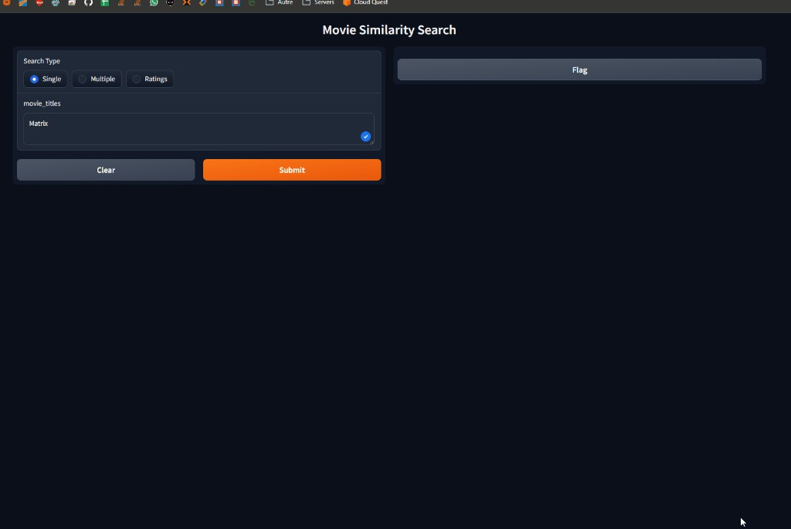
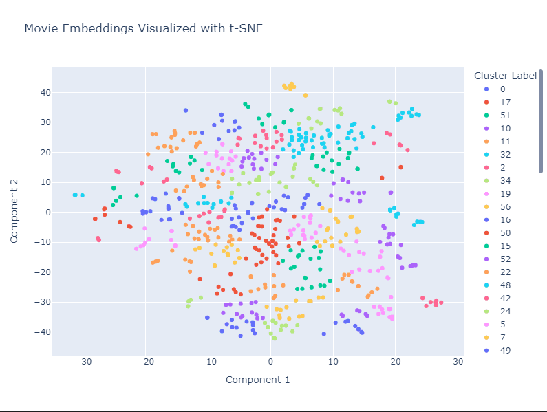
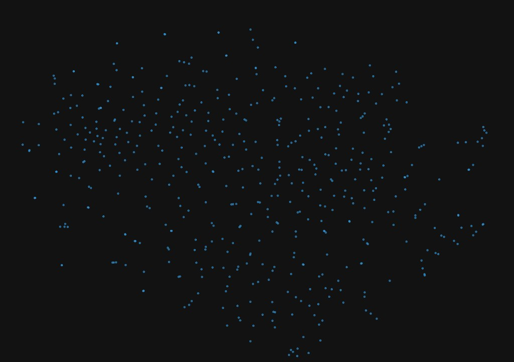

Antoine Boucher
Software Engineer · Platform and graphics
About
- Interactive graphics (C++/OpenGL, Blender); current stack: Java/Kotlin, Python, Docker/Kubernetes, and infrastructure-as-code.
Work Experience
Recent roles in cybersecurity research, teaching, and cloud platforms.
Mar 2025 – Feb 2026
Secure cloud platforms
- Split a monolith into per-service repos and ran 5 GitLab CI/CD pipelines with dedicated runners on GCP across two GKE clusters; Terraform handled networking and observability so cloud releases stayed repeatable
- Containerized workloads on Docker, ran research GKE on GCP with workload networking, and rolled out services through Terraform to ship infrastructure changes with less risk
- Added JUnit and Playwright E2E coverage across 5 Java microservices so regressions surfaced before release
- Wired Android builds into GitLab CI/CD and promoted them into the Terraform-managed GKE stack on GCP, keeping mobile releases aligned with Kubernetes-backed backends
- Built scripted cybersecurity risk analysis across 1000+ risks and 181+ threat categories: weighted scoring, star-based prioritization, and an Angular triage UI so analysts worked from consistent context
- Technical Skills: Java, Kotlin, Android, Docker, Kubernetes, Terraform, GitLab CI/CD, GCP, JUnit, Playwright, Angular
- Soft Skills: Cross-functional collaboration, stakeholder communication, prioritization with research analysts
Sep 2024 – Jan 2026
Teaching Assistant — DevSecOps (LOG 8100)
- Under LOG 8100 secure-delivery goals, authored and refreshed DevSecOps-aligned lab and lecture artifacts so students practiced current release-security patterns
- Across approximately 20 concurrent teams, built and maintained the GitLab workspace layout (repos, CI/CD templates, runners, workflows) with permissioning, reducing admin friction during the term
- When project teams stalled on platform basics, coached container build, deploy, and debug flows in Docker and Kubernetes, unblocking lab milestones
- Taught security with OWASP-driven examples (common risks, safe defaults, remediation) tied to hands-on lab scenarios
- Graded labs and coached on assignments so resubmissions came back cleaner and faster
- Technical Skills: GitLab, CI/CD, Docker, Kubernetes, OWASP, Linux
- Soft Skills: Team coaching, constructive feedback, classroom facilitation
Feb 2024 – Present
Teaching Assistant
Labs, integrator-project support, and office hours across mobile/UX, integrator-project, and distributed-data tracks; course-level detail follows by term.
- Taught labs, integrator-project support, and office hours on mobile/UX, integrator-project, and distributed-data tracks across multiple ÉTS terms (e.g., TCH 057 Winter 2024; IND 500 Fall 2025; TCH 099 Summer 2024, Winter 2025, Summer 2025; GTI 660 Summer 2024; GTI 320 Winter 2026)
- When distributed-data labs needed modernization, authored and refreshed SQL, MongoDB, Kafka, and PostgreSQL exercises with rubrics and actionable feedback for IND 500, GTI 660, and related cohorts, matching assessments to learning outcomes
- For TCH 099 integrator teams blocked by integration issues, debugged architecture and backend/data pipelines, sustained Azure-backed course infrastructure, and coached milestones and SCRUM routines so students shipped end-to-end features
- Facilitated TCH 057 mobile/UX labs and GTI 320 (Winter 2026) delivery, keeping sessions on track by resolving tooling and concept questions quickly
- Technical Skills: SQL, MongoDB, Kafka, PostgreSQL, Azure, Android Studio, SCRUM
- Soft Skills: Student mentorship, rubric-driven feedback, patience under deadline pressure
GTI 320 — Mathematical Programming: Patterns & Efficient Algorithms (Winter 2026)
IND 500 — Distributed Databases (Fall 2025)
TCH 099 — Informatics Integrator Project (Summer 2025, Winter 2025, Summer 2024)
GTI 660 — Multimedia Databases (Summer 2024)
TCH 057 — Mobile Applications and User Experience (Winter 2024)
- Winter 2024 Android Studio, UI/UX (TCH 057)
- Summer 2024 SQL (GTI 660)
- Summer 2024; Winter 2025; Summer 2025 Microsoft Azure, SCRUM, backend and data-pipeline integration (TCH 099)
- Fall 2025 SQL, MongoDB, Kafka, PostgreSQL, distributed databases (IND 500)
- Winter 2026 Mathematical programming patterns and efficient algorithms (GTI 320)
May 2023 – Aug 2023
Cloud Developer
- Addressed organization-scoped access for an IoT platform by designing a three-tier Auth0 subscription model, gating product capabilities per tenant
- Integrated Sentry SDK in C# with Serilog so production errors were easier to trace for support and engineering
- Worked through ONVIF and WebRTC constraints for IoT-scale video streaming
- Ran Azure DevOps pipelines with feature flags and repeatable promotion workflows
- Technical Skills: C#, .NET, Azure DevOps, Auth0, Sentry, ONVIF, WebRTC
- Soft Skills: Requirements clarification, partner communication, calm under production pressure
Jan 2022 – May 2022
Back End Developer
- Built a 6-step signup flow and mobile-app observability on Kotlin/Spring Boot microservices for 10,000+ active users
- Built signup-date-aware onboarding campaigns for first-touch marketing
- Added enrollment API flows on legacy systems so new clients reached active coverage faster
- Built Kotlin login and MFA APIs for mobile clients while keeping policy controls in place
- Extended ELK with Kibana dashboards and harmonized microservice error codes so ops had consistent incident signals
- Technical Skills: Kotlin, Spring Boot, GraphQL, MongoDB, ELK, Kibana
- Soft Skills: Agile teamwork, incident communication, cross-team coordination
Jun 2020 – Dec 2020
Web Specialist
- Redesigned the FR/EN blog on a bilingual CommerceBuild site for clearer navigation and better accessibility
- Added CommerceBuild dynamic sales labels tuned for search/SEO on product pages
- Implemented a custom Add-to-Cart API on CommerceBuild to shorten checkout
- Trained staff on HTML/CSS/JS and handled storefront support, which cut repeat maintenance questions
- Fixed popup, banner, and grid regressions and added a 3CX chatbot for self-serve support
- Technical Skills: HTML, CSS, JavaScript, CommerceBuild, SEO
- Soft Skills: Client communication, UX empathy, staff training
Sep 2020 – Apr 2021
Full Stack Developer
- Built a Python/Django/Vue.js/PostgreSQL parser for supplier feeds (XML, JSON, CSV, Excel), replacing one-off scripts
- Integrated Facebook Shop and Marketplace APIs so catalog data synced without double entry
- Added an exchange-rate service tied to inventory and effective dates to keep CAD/USD catalogs aligned
- Technical Skills: Python, Django, Vue.js, PostgreSQL, Git
- Soft Skills: Remote collaboration, supplier-facing problem solving
May 2019 – Jan 2020
Full Stack Developer
- On the Italiarail stack with Railkey Tech: integrated Braintree, updated ticketing UI to new brand guidelines, extended purchase APIs, and tightened booking flow performance
- Accelerated internal support by building Django, Pyramid, and jQuery tools plus a currency-usage dashboard, replacing ad hoc spreadsheets for CS and finance
- During co-op, rebuilt the Selenium end-to-end harness and, while part-time, expanded automated coverage, catching UI regressions before release
- Technical Skills: Python, Django, Selenium, MongoDB, Git
- Soft Skills: QA partnership, detail-oriented delivery
May 2017 – Aug 2017; May 2018 – Aug 2018
Engineering Intern
- Automated camera/ISP validation by combining Ansible with Linux/QEMU UEFI VM installs, HDR 10bpp Nexus 6 test imagery, and Flask REST services for remote capture and display, shrinking manual validation loops
- Built outdoor vision datasets (~12,000 images) with capture/annotation, Python RAW-color tooling, and rig control for multi-viewpoint experiments
- Sustained imaging lab throughput with QNAP-backed Ubuntu workstations, networking support, and Linux/Windows servers powering experiments and REST tooling
- Technical Skills: Python, C++, CUDA, OpenCV, Flask, Linux
- Soft Skills: Research discipline, clear lab documentation
Leadership & Community
Jan 2023 – Jan 2025
President
- Maintains club infrastructure and web presence; supports projects in trading, data, and engineering education
- Leads development and support for internal tools (platform, strategies, workshops, automation)
- Technical Skills: Python, data tooling, web, infrastructure
- Soft Skills: Community leadership, workshop facilitation, volunteer coordination
ETS Memes
Sep 2017 – Jan 2025
Co-Creator & Administrator
- Community page management, content creation, moderation, and operations
Selected Projects
A split view of long-running personal projects and contributions made inside shared codebases.
Personal projects and maintained open source
Tools, homelab work, integrations, and prototypes that I design, publish, and maintain directly.
-
UML diagrams from a chat interface (MCP)
Describe architecture in a chat interface, uml-mcp MCP tools return a UML diagram uml-mcp is an open-source MCP server for generating UML diagrams from chat. You describe the architecture, and the tool returns diagrams that are useful for reviews and documentation, with Mermaid, PlantUML, or Kroki. The same workflow runs in Cursor and in ChatGPT via a Custom GPT. -
Linux homelab: media library in Docker ComposeA
docker compose up -dstack for standing up a media library on a Linux homelab, with downloads, *Arr automation, Plex or Jellyfin, remote access, and monitoring. The companion bash scripts help bootstrap a fresh host one service at a time before moving to the full compose setup. -
ESP32 IoT 7-segment display with a local web UIFirmware for an ESP32 FireBeetle paired with an Adafruit I2C 7-segment display. A small local web UI lets you send digits and characters from any browser on the LAN.
-
AR lenses on SnapchatDesigned and published AR lenses on Snapchat (42 lenses, 2017–2020), with a focus on visual effects, fast iteration, and mobile reach. All-time Lens Insights: 13.97M plays, 20.38M views, 711.8k shares, 10,092 favorites, 753 posts, 428 unique posters.
Try published lenses (17)
- BIG SMILE
- Countdown to 10
- ETS HELMET
- Face Corruption
- Fox 3D
- Glasses Saint Leo
- Go Crazy Facetime
- Gmod Dance
- Half Life Face
- Isabelle Justice
- Moist One
- nah with the boys
- Old man Hoodie
- Old School Paint
- Scared Hamster
- Ti-Tracker
- Trippy Eyes
Each link opens the lens experience on lens.snap.com (Snapchat app on mobile).
Contributions and collaborative work
A shorter selection of accepted contributions grouped by research, club work, and maintained community code.
Master's and research code
Research-facing work tied to simulation, scientific tooling, and graduate-level engineering.
-
ETSim contribution · packaging, release workflow, and data toolingAccepted work on the ETSim codebase around package structure, release flow, and dependency submission. The project sits closer to master's-level research tooling than to club infrastructure. Also contributed TrueMap support to fredericjs/surfalize for surface-metrology workflows.
-
Academic event platform and participant support tools
Preview conference website
Built the official Annual Quebec-Ontario Pre-SIGGRAPH Workshop website, with a straightforward experience for the program, logistics, and attendee questions. -
IPC contribution · anisotropic frictionContribution to anisotropic friction work in the IPC Toolkit. The work extends contact friction handling in a serious simulation codebase, across the C++/Eigen core, Python
ipctkbindings, notebooks, and tests.
Club and school community work
Accepted contributions tied to student community projects and internal engineering initiatives.
-
AlgoÉTS contribution · AI financial-news backtestingContribution to an AlgoÉTS open-source FastAPI and MongoDB stack that ingests more than 60 sources, classifies news by sentiment and ticker, and tests how headlines relate to market moves. The project uses a Poetry/Docker workflow and public documentation.
-
AlgoÉTS contribution · NLP movie similarity with pgvector

Gradio app for title, multi-title, and rating-based queries 
t-SNE view of embedding neighborhoods 
2D projection of the movie embedding space Open-source AlgoÉTS coursework on movie similarity: Sentence Transformers embeddings in PostgreSQL with pgvector, plus optional Qdrant and Neo4j tracks. Jupyter notebooks compare cosine and L2 distance, and a Gradio UI runs similarity search from titles or ratings.
Maintained community integrations
Forks and accepted contributions that remain useful to a broader open-source user base.
-
Serilog sink for Sentry on .NETMaintains a .NET sink that connects Serilog to Sentry, so logs and errors can be centralized without heavy setup. Six package ids on NuGet cover net6.0 and net10.0 (main, ASP.NET Core, and framework-specific lines), with CI publishing on GitHub Releases and ready-to-use configuration examples.
NuGet packages (version and downloads)
Badges load from shields.io (same as the repo README). Latest release: v1.0.7.2 on GitHub.
-
Home Assistant (HACS) integration for Renpho smart scales
Vitals, weight history, and body-composition gauges Girth measurements and goals from the integration Forked and now maintain an open-source integration from neilzilla/hass-renpho that brings Renpho weight, BMI, body fat, girth measurements, and goals into Home Assistant. I reworked the API client, the config flow, optional proxy support, and the related documentation.
Other accepted contributions
A short list of merged work that stays off the main cards, but still shows range.
- XITRIX/Moonlight-Switch: merged build fixes so the port compiles on newer Nintendo Switch toolchains.
- Place1/wg-access-server: Docker image updates, admin UI styling, and DevOps workflow fixes.
Loading map…
Contact
Software engineering roles and focused consulting. Replies within 24 hours.
30-min intro call Education
-
Aug 2023 – Apr 2026
École de technologie supérieure (ÉTS)
Master's Degree, Information Technology Engineering
Thesis: real-time surface wear in interactive physics simulations, with dynamic friction and textures.
-
Sep 2018 – Apr 2023
École de technologie supérieure (ÉTS)
Bachelor's Degree, Information Technology Engineering
Competences
Languages and platform delivery first, graphics and cloud stack; each certification links to its verification page.
Languages
Backend & APIs
Web
Delivery
Reliability
Data
Certifications
Recommendations
-
“Antoine stands out not only for his technical expertise, but above all for his relational intelligence. He shows that an excellent developer can also be an exceptional teammate and a real boost to team morale.”
Conferences
- Graphquon 2025 (Nov 15–16, 2025) — Presenter, Annual Quebec-Ontario Pre-SIGGRAPH Workshop, University of Toronto
Publications
Interests
Software engineer in Montreal focused on platform engineering, reliability, backend systems, and interactive graphics. I build cloud delivery pipelines, developer tooling, and production-oriented services, with research work in C++/OpenGL, Blender, real-time simulation, and dynamic surface appearance.
Last updated: